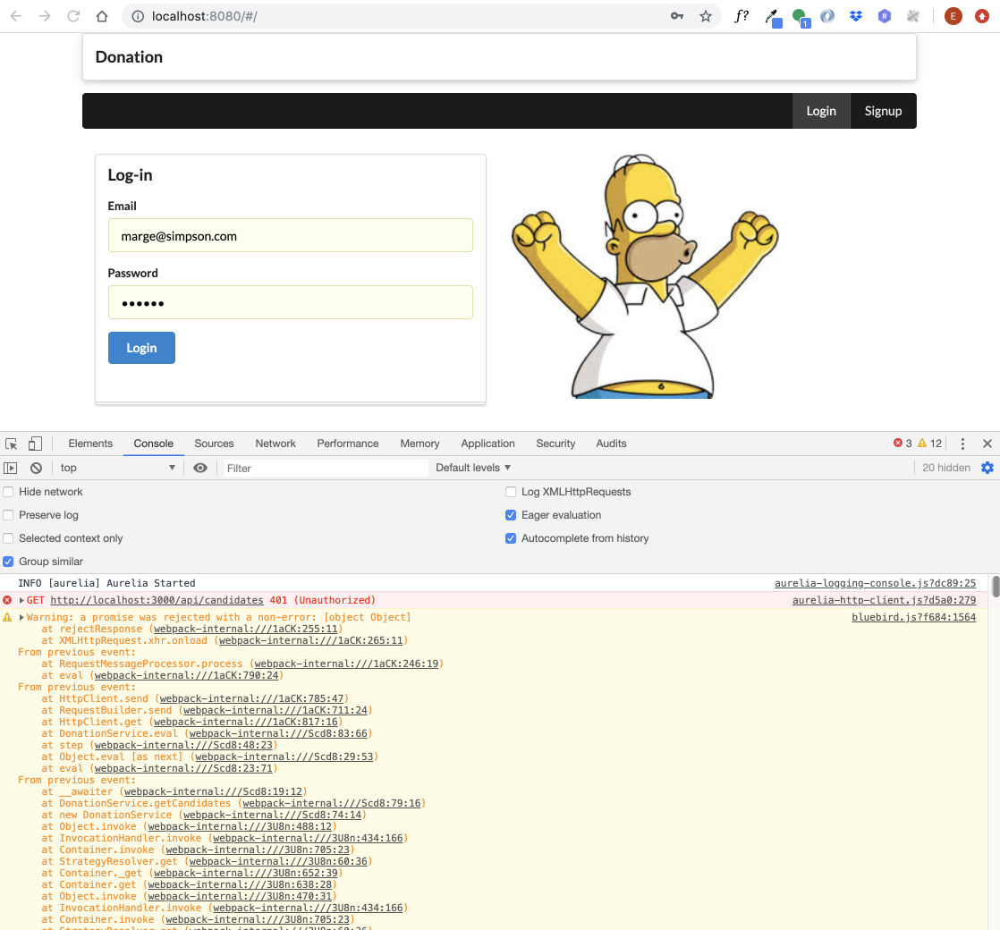
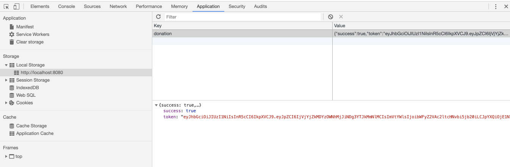

Complete JWT in donation-web + incorporate into donation-client
Replace all:
auth: false,With the jwt strategy:
auth: {
strategy: 'jwt',
},New methods to initialize and clear the token:
suiteSetup(async function() {
await donationService.deleteAllUsers();
const returnedUser = await donationService.createUser(newUser);
const response = await donationService.authenticate(newUser);
});
suiteTeardown(async function() {
await donationService.deleteAllUsers();
donationService.clearAuth();
});All tests should work now. This is the complete donationapitest :
'use strict';
const assert = require('chai').assert;
const DonationService = require('./donation-service');
const fixtures = require('./fixtures.json');
const _ = require('lodash');
suite('Donation API tests', function() {
let donations = fixtures.donations;
let newCandidate = fixtures.newCandidate;
let newUser = fixtures.newUser;
const donationService = new DonationService(fixtures.donationService);
suiteSetup(async function() {
await donationService.deleteAllUsers();
const returnedUser = await donationService.createUser(newUser);
const response = await donationService.authenticate(newUser);
});
suiteTeardown(async function() {
await donationService.deleteAllUsers();
donationService.clearAuth();
});
setup(async function() {
await donationService.deleteAllDonations();
});
teardown(async function() {
await donationService.deleteAllDonations();
});
test('create a donation', async function() {
const returnedCandidate = await donationService.createCandidate(newCandidate);
await donationService.makeDonation(returnedCandidate._id, donations[0]);
const returnedDonations = await donationService.getDonations(returnedCandidate._id);
assert.equal(returnedDonations.length, 1);
assert(_.some([returnedDonations[0]], donations[0]), 'returned donation must be a superset of donation');
});
test('create multiple donations', async function() {
const returnedCandidate = await donationService.createCandidate(newCandidate);
for (var i = 0; i < donations.length; i++) {
await donationService.makeDonation(returnedCandidate._id, donations[i]);
}
const returnedDonations = await donationService.getDonations(returnedCandidate._id);
assert.equal(returnedDonations.length, donations.length);
for (var i = 0; i < donations.length; i++) {
assert(_.some([returnedDonations[i]], donations[i]), 'returned donation must be a superset of donation');
}
});
test('delete all donations', async function() {
const returnedCandidate = await donationService.createCandidate(newCandidate);
for (var i = 0; i < donations.length; i++) {
await donationService.makeDonation(returnedCandidate._id, donations[i]);
}
const d1 = await donationService.getDonations(returnedCandidate._id);
assert.equal(d1.length, donations.length);
await donationService.deleteAllDonations();
const d2 = await donationService.getDonations(returnedCandidate._id);
assert.equal(d2.length, 0);
});
test('delete donations', async function() {
const returnedCandidate = await donationService.createCandidate(newCandidate);
for (var i = 0; i < donations.length; i++) {
await donationService.makeDonation(returnedCandidate._id, donations[i]);
}
await donationService.deleteDonations(returnedCandidate._id);
const d = await donationService.getDonations(returnedCandidate._id);
console.log(d);
assert.equal(d.length, 0);
});
});Apart from the authenticate and create methods, replace the remaining handlers :
auth: false,... with the jwt strategy:
auth: {
strategy: 'jwt',
},This is a revised users test:
'use strict';
const assert = require('chai').assert;
const DonationService = require('./donation-service');
const fixtures = require('./fixtures.json');
const _ = require('lodash');
suite('User API tests', function() {
let users = fixtures.users;
let newUser = fixtures.newUser;
const donationService = new DonationService(fixtures.donationService);
suiteSetup(async function() {
await donationService.deleteAllUsers();
const returnedUser = await donationService.createUser(newUser);
const response = await donationService.authenticate(newUser);
});
suiteTeardown(async function() {
await donationService.deleteAllUsers();
donationService.clearAuth();
});
test('create a user', async function() {
const returnedUser = await donationService.createUser(newUser);
assert(_.some([returnedUser], newUser), 'returnedUser must be a superset of newUser');
assert.isDefined(returnedUser._id);
});
test('get user', async function() {
const u1 = await donationService.createUser(newUser);
const u2 = await donationService.getUser(u1._id);
assert.deepEqual(u1, u2);
});
test('get invalid user', async function() {
const u1 = await donationService.getUser('1234');
assert.isNull(u1);
const u2 = await donationService.getUser('012345678901234567890123');
assert.isNull(u2);
});
test('delete a user', async function() {
let u = await donationService.createUser(newUser);
assert(u._id != null);
await donationService.deleteOneUser(u._id);
u = await donationService.getUser(u._id);
assert(u == null);
});
test('get all users', async function() {
await donationService.deleteAllUsers();
await donationService.createUser(newUser);
await donationService.authenticate(newUser);
for (let u of users) {
await donationService.createUser(u);
}
const allUsers = await donationService.getUsers();
assert.equal(allUsers.length, users.length + 1);
});
test('get users detail', async function() {
await donationService.deleteAllUsers();
const user = await donationService.createUser(newUser);
await donationService.authenticate(newUser);
for (let u of users) {
await donationService.createUser(u);
}
const testUser = {
firstName: user.firstName,
lastName: user.lastName,
email: user.email,
password: user.password
};
users.unshift(testUser);
const allUsers = await donationService.getUsers();
for (var i = 0; i < users.length; i++) {
assert(_.some([allUsers[i]], users[i]), 'returnedUser must be a superset of newUser');
}
});
test('get all users empty', async function() {
await donationService.deleteAllUsers();
const user = await donationService.createUser(newUser);
await donationService.authenticate(newUser);
const allUsers = await donationService.getUsers();
assert.equal(allUsers.length, 1);
});
});This test is a little fragile - but all tests should pass.
Currently we do not record the donor when we make a donation using the api:
makeDonation: {
auth: {
strategy: 'jwt',
},
handler: async function(request, h) {
let donation = new Donation(request.payload);
const candidate = await Candidate.findOne({ _id: request.params.id });
if (!candidate) {
return Boom.notFound('No Candidate with this id');
}
donation.candidate = candidate._id;
donation = await donation.save();
donation.donor = userId;
return donation;
}
},Because the routes are authenticated, we should be able to recover the user id from the token. This is a new utility method:
exports.getUserIdFromRequest = function(request) {
var userId = null;
try {
const authorization = request.headers.authorization;
var token = authorization.split(' ')[1];
var decodedToken = jwt.verify(token, 'secretpasswordnotrevealedtoanyone');
userId = decodedToken.id;
} catch (e) {
userId = null;
}
return userId;
};Now we can revise makeDonation to include the donor id in the donation:
const utils = require('./utils.js');
...
makeDonation: {
auth: {
strategy: 'jwt',
},
handler: async function(request, h) {
const userId = utils.getUserIdFromRequest(request);
let donation = new Donation(request.payload);
const candidate = await Candidate.findOne({ _id: request.params.id });
if (!candidate) {
return Boom.notFound('No Candidate with this id');
}
donation.candidate = candidate._id;
donation.donor = userId;
donation = await donation.save();
return donation;
}
},To test this - bring in a new test in donationapitest:
test('create a donation and check donor', async function() {
const returnedCandidate = await donationService.createCandidate(newCandidate);
await donationService.makeDonation(returnedCandidate._id, donations[0]);
const returnedDonations = await donationService.getDonations(returnedCandidate._id);
assert.isDefined(returnedDonations[0].donor);
});This test should pass. We can frim up the tests to check if the id is correct.
test('create a donation and check donor', async function() {
const returnedCandidate = await donationService.createCandidate(newCandidate);
await donationService.makeDonation(returnedCandidate._id, donations[0]);
const returnedDonations = await donationService.getDonations(returnedCandidate._id);
assert.isDefined(returnedDonations[0].donor);
const users = await donationService.getUsers();
assert(_.some([users[0]], newUser), 'returnedUser must be a superset of newUser');
});This is the complete project at this stage:
We can now turn our attention to the client application - and incorporate JWT support into Aurelia.
Because of how we have structured out client application, all changes can be restricted to the DonationService class.
This is the current constructor for DonationService:
constructor(
private httpClient: HttpClient,
private ea: EventAggregator,
private au: Aurelia,
private router: Router
) {
httpClient.configure(http => {
http.withBaseUrl('http://localhost:3000');
});
this.getCandidates();
this.getUsers();
this.getDonations();
}We are retrieving all users, candidate and donations when the application launches. As all of these routes are now secured, so launching the app will fail at this point.
We can see this in the developer tools:

We are getting a "401 (Unauthorized)" on all these routes. Our strategy should be to:
So, start be simplifying the constructor - remove these calls:
constructor(
private httpClient: HttpClient,
private ea: EventAggregator,
private au: Aurelia,
private router: Router
) {
httpClient.configure(http => {
http.withBaseUrl('http://localhost:3000');
});
}We can then rework the login method:
async login(email: string, password: string) {
const response = await this.httpClient.post('/api/users/authenticate', {
email: email,
password: password
});
const status = await response.content;
if (status.success) {
this.httpClient.configure(configuration => {
configuration.withHeader('Authorization', 'bearer ' + status.token);
});
await this.getCandidates();
await this.getUsers();
await this.getDonations();
this.changeRouter(PLATFORM.moduleName('app'));
return true;
} else {
return false;
}
}The simple change we are making is to retrieve and remember the token if we have authenticated successfully:
if (status.success) {
this.httpClient.configure(configuration => {
configuration.withHeader('Authorization', 'bearer ' + status.token);
});.. and the including this header in all subsequent requests.
Restart both applications now - and you should be able to log in and make donations.
Logging out is just matter of clearing this token:
logout() {
this.httpClient.configure(configuration => {
configuration.withHeader('Authorization', '');
});
this.changeRouter(PLATFORM.moduleName('start'));
}Currently we are retrieving all donations + users when the user logs in, including an attempt to rebuild the donation list to contain references to a client copy of the donations:
async getDonations() {
const response = await this.httpClient.get('/api/donations');
const rawDonations: RawDonation[] = await response.content;
rawDonations.forEach(rawDonation => {
const donation = {
amount: rawDonation.amount,
method: rawDonation.method,
candidate: this.candidates.find(candidate => rawDonation.candidate == candidate._id),
donor: this.usersById.get(rawDonation.donor)
};
this.donations.push(donation);
});
}This is getting a little too complex to manage. For the moment, we will remove all local user management and also disable the retrieval of donations. Here is a simpler version of DonationService:
import { inject, Aurelia } from 'aurelia-framework';
import { Router } from 'aurelia-router';
import { PLATFORM } from 'aurelia-pal';
import { Candidate, Donation } from './donation-types';
import { HttpClient } from 'aurelia-http-client';
import { EventAggregator } from 'aurelia-event-aggregator';
import { TotalUpdate } from './messages';
@inject(HttpClient, EventAggregator, Aurelia, Router)
export class DonationService {
candidates: Candidate[] = [];
donations: Donation[] = [];
paymentMethods = ['Cash', 'Paypal'];
total = 0;
constructor(
private httpClient: HttpClient,
private ea: EventAggregator,
private au: Aurelia,
private router: Router
) {
httpClient.configure(http => {
http.withBaseUrl('http://localhost:3000');
});
}
async getCandidates() {
const response = await this.httpClient.get('/api/candidates');
this.candidates = await response.content;
console.log(this.candidates);
}
async createCandidate(firstName: string, lastName: string, office: string) {
const candidate = {
firstName: firstName,
lastName: lastName,
office: office
};
const response = await this.httpClient.post('/api/candidates', candidate);
const newCandidate = await response.content;
this.candidates.push(newCandidate);
}
async donate(amount: number, method: string, candidate: Candidate) {
const donation = {
amount: amount,
method: method,
candidate: candidate
};
const response = await this.httpClient.post('/api/candidates/' + candidate._id + '/donations', donation);
this.donations.push(donation);
this.total = this.total + amount;
this.ea.publish(new TotalUpdate(this.total));
console.log('Total so far ' + this.total);
}
async signup(firstName: string, lastName: string, email: string, password: string) {
const user = {
firstName: firstName,
lastName: lastName,
email: email,
password: password
};
const response = await this.httpClient.post('/api/users', user);
const newUser = await response.content;
this.changeRouter(PLATFORM.moduleName('app'));
return false;
}
async login(email: string, password: string) {
const response = await this.httpClient.post('/api/users/authenticate', {
email: email,
password: password
});
const status = await response.content;
if (status.success) {
this.httpClient.configure(configuration => {
configuration.withHeader('Authorization', 'bearer ' + status.token);
});
await this.getCandidates();
this.changeRouter(PLATFORM.moduleName('app'));
return true;
} else {
return false;
}
}
logout() {
this.httpClient.configure(configuration => {
configuration.withHeader('Authorization', '');
});
this.changeRouter(PLATFORM.moduleName('start'));
}
changeRouter(module: string) {
this.router.navigate('/', { replace: true, trigger: false });
this.router.reset();
this.au.setRoot(PLATFORM.moduleName(module));
}
}And this is a simplified set of types:
export interface Candidate {
firstName: string;
lastName: string;
office: string;
_id : string;
}
export interface Donation {
amount: number;
method: string;
candidate: Candidate;
}
export interface User {
firstName: string;
lastName: string;
email: string;
password: string;
_id: string;
}We will also remove donor from the donation-list:
<template>
<div class="ui stacked segment">
<h3 class="ui dividing header"> Donations to Date </h3>
<table class="ui celled table segment">
<thead>
<tr>
<th>Amount</th>
<th>Payment Method</th>
<th>Candidate</th>
</tr>
</thead>
<tbody>
<tr repeat.for="donation of donations">
<td> ${donation.amount}</td>
<td> ${donation.method}</td>
<td> ${donation.candidate.lastName}, ${donation.candidate.firstName}</td>
</tr>
</tbody>
</table>
</div>
</template>Incorporate and this this version now.
We will also remove
In the client application, having logged in refresh the donation page in the browser. You will notice that you have to log in again, as all local state (including the token we have just retrieved) has been lost.
A common pattern in SPA development is to cache these tokens in the browser - so that if a refresh is triggered, we can recover the token from the cache and remain logged in.
This is analogous to they way cookies work, except instead of using browser cookies, we use a similar feature in the browser called LocalStorage:
The API is very simple to use.
First, when a user successfully logs in we can store the token in LocalStorage:
async login(email: string, password: string) {
...
if (status.success) {
this.httpClient.configure(configuration => {
configuration.withHeader('Authorization', 'bearer ' + status.token);
});
localStorage.donation = JSON.stringify(response.content);
await this.getCandidates();
...
}Just a single line has been added:
localStorage.donation = JSON.stringify(response.content)Refresh the application now again and log in. In developer tools you should be able to see the local storage for the app and the token:

If the user explicitly requests to log out, then we should clear this field:
logout() {
localStorage.donation = null;
this.httpClient.configure(configuration => {
configuration.withHeader('Authorization', '');
});
this.changeRouter(PLATFORM.moduleName('start'));
}Try this now, and verify in Chrome developer tools that token is being created and deleted as expected.
We can introduce a new method into DonationService to check for the presence of this token, and if found set it has a header (similar to the log in procedure):
checkIsAuthenticated() {
let authenticated = false;
if (localStorage.donation !== 'null') {
authenticated = true;
this.httpClient.configure(http => {
const auth = JSON.parse(localStorage.donation);
http.withHeader('Authorization', 'bearer ' + auth.token);
});
this.changeRouter(PLATFORM.moduleName('app'));
}
}This will change the router to the logged in route - it a valid token was found.
This method will need to be called when the application starts up - and if it detects the token it will bypass the log in screen and take us to the donate page. One way of doing this is to rework the start.ts module:
import { inject } from 'aurelia-framework';
import { RouterConfiguration, Router } from 'aurelia-router';
import { PLATFORM } from 'aurelia-pal';
import { DonationService } from './services/donation-service';
@inject(DonationService)
export class Start {
router: Router;
constructor(private ds: DonationService) {}
configureRouter(config: RouterConfiguration, router: Router) {
config.map([
{
route: ['', 'login'],
name: 'Login',
moduleId: PLATFORM.moduleName('views/login'),
nav: true,
title: 'Login'
},
{
route: 'signup',
name: 'signup',
moduleId: PLATFORM.moduleName('views/signup'),
nav: true,
title: 'Signup'
}
]);
this.router = router;
}
attached() {
this.ds.checkIsAuthenticated();
}
}In this version, we are locating the DonationService when we start - and calling the checkIsAuthenticated() method.
Try this now - log in and make a donation. Then, refresh the page. You should be back on the donate page each time (unless you log out).
The project at the end of this lab: